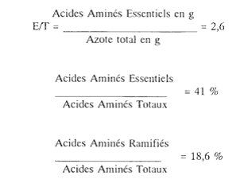

RÉSUMÉ DES CARACTÉRISTIQUES DU PRODUIT
ANSM - Mis à jour le : 20/12/2005
AMINOMIX 2, solution injectable pour perfusion (IV) en poche bicompartimentée
2. COMPOSITION QUALITATIVE ET QUANTITATIVE
Composition de la solution A
L-Isoleucine ................................................................................................................................... 0,5000 g
L-Leucine ....................................................................................................................................... 0,7400 g
Monochlorhydrate de L-Lysine ......................................................................................................... 0,8250 g
L-Méthionine ................................................................................................................................. 0,4300 g
L-Phénylalanine .............................................................................................................................. 0,5100 g
L-Thréonine .................................................................................................................................... 0,4400 g
L-Tryptophane ............................................................................................................................... 0,2000 g
L-Valine ......................................................................................................................................... 0,6200 g
L-Arginine ...................................................................................................................................... 1,2000 g
L-Histidine ..................................................................................................................................... 0,3000 g
Glycine .......................................................................................................................................... 1,4000 g
L-Alanine ....................................................................................................................................... 1,5000 g
L-Proline ........................................................................................................................................ 1,5000 g
Glycérophosphate de sodium .......................................................................................................... 0,9180 g
Pour 100 ml.
Composition de la solution B
Glucose monohydraté ................................................................................................................... 26,4000 g
Chlorure de sodium ......................................................................................................................... 0,2330 g
Chlorure de potassium .................................................................................................................... 0,4470 g
Chlorure de magnésium hexahydraté ................................................................................................ 0,1016 g
Chlorure de calcium dihydraté .......................................................................................................... 0,0735 g
Chlorure de zinc ............................................................................................................................. 0,0011 g
Pour 100 ml.
La solution finale contient 50 g/l d'acides aminés, soit 8,2 g/l d'azote, et 120 g/l de glucose.
Apport calorique glucidique: 480 Kcal/l
Apport calorique total: 680 Kcal/l
pH de la solution finale: pH = 5,0 à pH = 6,0
Osmolarité totale: 1316 mOsm/l.
Composition molaire
|
Na + |
50,00 mmol/l |
(≃ 50 mEq/l) |
|
K+ |
30,00 mmol/l |
(≃ 30 mEq/l) |
|
Ca ++ |
2,50 mmol/l |
(≃ 5 mEq/l) |
|
Mg++ |
2,50 mmol/l |
(≃ 5 mEq/l) |
|
Zn++ |
0,04 mmol/l |
(≃ 0,08 mEq/l) |
|
Cl- |
85,11 mmol/l |
(≃ 85,11 mEq/l) |
|
Glycérophosphate-- |
15,00 mmol/l |
(≃ 30 mEq/l) |
Les solutions A et B ne contiennent ni conservateurs, ni sulfites, ni colorants.
Pour la liste complète des excipients, voir rubrique 6.1.
Solution injectable pour perfusion.
4.1. Indications thérapeutiques
Celles de l'alimentation parentérale, totale ou associée à la nutrition entérale lorsque l'alimentation orale est impossible ou insuffisante.
AMINOMIX 2 est plus particulièrement adapté à la nutrition parentérale des patients modérément cataboliques et aux régimes d'épargne azotée.
4.2. Posologie et mode d'administration
VOIE VEINEUSE CENTRALE
Elle est fonction du niveau de catabolisme azoté (estimé ou mesuré) du malade.
La posologie moyenne chez l'adulte est de 20 à 40 ml/kg/jour.
Pour un patient de 60 kg la posologie moyenne est de 1200 à 2400 ml/j (soit un débit horaire de 50 à 100 ml).
Ce qui correspond à:
· 144 à 290 g de glucose par jour
· 60 à 120 g d'acides aminés (soit 10 à 20 g d'azote par jour).
La dose administrée ne doit pas dépasser: 40 ml/kg/jour, ce qui correspond à:
· 4,8 g/kg/jour de glucose
· 2 g/kg/jour d'acides aminés (soit 0,33 g/kg/jour d'azote)
· Nouveau né prématuré
· Nourrisson
4.4. Mises en garde spéciales et précautions d'emploi
Mises en garde
NE PAS UTILISER PAR VOIE VEINEUSE PERIPHERIQUE
Précautions particulières d'emploi
· Se conformer à une vitesse de perfusion lente (de 0,8 à 1,7 ml/minute) du fait du risque d'apparition d'une diurèse osmotique et d'une perte rénale d'acides aminés.
· Surveillance de la balance hydroélectrolytique et de l'osmolarité sérique.
· Surveillance accrue en cas de:
o troubles du métabolisme des acides aminés
o insuffisance hépatocellulaire grave
o insuffisance cardiaque décompensée et inflation hydro-sodée
o insuffisance rénale
o hyperkaliémie
o acidose métabolique (l'administration d'hydrates de carbone est déconseillée en cas d'acidose lactique)
o diabète:
surveiller la glycémie, la glycosurie, l'acétonurie et ajuster éventuellement la posologie de l'insuline.
· En cas d'ajout d'électrolytes et en présence d'émulsion lipidique, la stabilité du mélange est conservée à condition de ne pas ajouter une concentration en cations divalents (Mg++, Ca++):
o supérieure à 10,8 mmol/l si on ajoute une émulsion injectable d'huile de soja, de phosphatides et de glycérol;
o supérieure à 5 mmol/l en présence d'autres émulsions lipidiques.
4.5. Interactions avec d'autres médicaments et autres formes d'interactions
Ne pas ajouter de médicament dans la poche sans avoir préalablement vérifié la compatibilité avec la solution.
En raison de l'absence de données, il est préférable de ne pas administrer Aminomix 2 que ce soit au cours de la grossesse ou au cours de l'allaitement.
4.7. Effets sur l'aptitude à conduire des véhicules et à utiliser des machines
Sans objet.
· Frissons,
· Nausées,
· Vomissements,
· Fuites rénales entraînant un déséquilibre des acides aminés.
Ces effets sont dus le plus souvent à une perfusion trop rapide.
L'apparition de tout signe anormal doit faire interrompre la perfusion, qui pourra être reprise à vitesse plus lente.
5. PROPRIETES PHARMACOLOGIQUES
5.1. Propriétés pharmacodynamiques
SOLUTION DE NUTRITION PARENTERALE, PRODUIT D'APPORT PROTIDIQUE, PRODUIT D'APPORT GLUCIDIQUE.
(B: sang et organes hématopoïétiques)
La solution reconstituée permet un apport par voie intraveineuse d'acides aminés (50 g/l), de glucose (120 g/l) et d'électrolytes.
La composition qualitative de cette solution s'inscrit dans le concept le plus généralement admis, d'une répartition des acides aminés calquée sur celle d'une protéine de référence (œuf de poule, lait de femme ou de vache) tant du point de vue du rapport "Acides Aminés Essentiels/Acides Aminés Non-Essentiels" (41 %/59 %) que du pourcentage "d'Acides Aminés à Chaîne Ramifiée" (18,6 %).
Le rapport "Acides Aminés Essentiels/Azote total" (2,60), se situe à mi-chemin entre les recommandations anciennes et les plus récentes des comités d'experts (respectivement 3 et 2,25).
AMINOMIX 2, apporte l'ensemble des acides aminés essentiels (isoleucine, leucine, lysine, méthionine, phénylalanine, thréonine, tryptophane et valine) dans des proportions équilibrées.
En outre, AMINOMIX 2 apporte les acides aminés métaboliquement importants parmi les non-essentiels:
L'histidine et l'arginine, initialement classés par ROSE comme acides aminés non essentiels, sont en fait des acides aminés indispensables (les besoins de l'organisme ne sont plus couverts par les synthèses endogènes lorsque les besoins augmentent).
En particulier, un apport élevé d'arginine est intéressant puisque cet acide aminé possède des propriétés anti-cataboliques et immunomodulatrices importantes.
L'alanine et la glycine sont les principaux acides aminés glucoformateurs: leur utilisation est très nettement augmentée en situation d'agression afin de fournir le glucose dont l'organisme a besoin.
La proline est située au centre d'un carrefour métabolique permettant la synthèse de glutamate et d'hydroxyproline. Ce dernier point fait de la proline un acide aminé limitant pour la synthèse du collagène et donc pour les processus de réparation tissulaire.
AMINOMIX 2 apporte 8,2 g d'azote total par litre.

5.2. Propriétés pharmacocinétiques
La biodisponibilité de tous les principes actifs est de 100 %.
La demi-vie plasmatique des acides aminés varie de 5,3 minutes (tryptophane) à 14,7 minutes (histidine), celle du glucose est de 23 minutes.
Ces valeurs augmentent en cas d'insuffisance rénale.
· Métabolisme des acides aminés
Les acides aminés sont captés par tous les tissus et plus particulièrement par les muscles et le foie. La fraction la plus importante des acides aminés captés est utilisée pour les synthèses protéïques. Les acides aminés sont également utilisés comme source d'énergie (l'oxydation des acides aminés se traduit par l'élimination d'azote sous forme d'urée) et pour la synthèse de divers médiateurs.
· Métabolisme du glucose
Le glucose est un carburant essentiel de la plupart des cellules, le transfert cellulaire étant dépendant ou non de l'insuline. Le glucose est ensuite majoritairement métabolisé en glucose -(6) - phosphate, qui emprunte diverses voies métaboliques.
5.3. Données de sécurité préclinique
Chez l'animal, les effets secondaires peuvent être minimisés, voire évités par une perfusion plus lente (vomissements) et l'utilisation d'un vaisseau à gros débit.
Des modèles animaux d'insuffisance rénale et hépatique ont montré que les solutions d'acides aminés étaient bien tolérées. Toutefois dans l'insuffisance rénale sévère en l'absence de dialyse, l'administration de telles solutions peut entraîner une acidose métabolique ou une hyperazotémie.
Dans l'insuffisance hépatique sévère, l'apparition ou l'aggravation de troubles neurologiques (hyperammoniémie) lors d'une surcharge azotée, est possible.
L'apport de glucose (120 g/l), relativement important, peut entraîner une surcharge hydrique et une diurèse préjudiciable. Il en va de même de l'existence d'une hyperkaliémie, compte-tenu de l'apport potassique.
Par ailleurs, l'apport liquidien et l'osmolarité de la solution doivent être pris en considération en cas de perturbation hémodynamique, insuffisance cardiaque ou inflation hydrosodée.
L-Acide malique, acide chlorhydrique à 25 pour cent, eau pour préparations injectables.
Composition de la solution B
Acide chlorhydrique à 25 pour cent, hydroxyde de sodium, eau pour préparations injectables.
18 mois.
La solution doit être utilisée immédiatement après la reconstitution, au plus tard dans les 24 h à température ambiante ou après 3 jours à + 4°C.
6.4. Précautions particulières de conservation
A conserver à une température inférieure à 25°C et à l'abri de la lumière.
Ne pas congeler.
6.5. Nature et contenu de l'emballage extérieur
Poche double-chambre STERIFLEX (Polyamide 6.6/PE) munie de 2 tubulures (PE/Acétate de vinyle) obturées: l'une par un site d'addition (embout en polycarbonate, bouchon élastomère, capsule aluminium), l'autre par un site de perfusion (polycarbonate, bouchon latex).
La poche de 1000 ml comprend deux chambres remplies à 500 ml chacune, et permet un volume additionnel de 350 ml.
La poche de 1500 ml comprend deux chambres remplies à 750 ml chacune, et permet un volume additionnel de 1100 ml.
La poche de 2000 ml comprend deux chambres remplies à 1000 ml chacune, et permet un volume additionnel de 600 ml.
6.6. Précautions particulières d’élimination et de manipulation
Rompre l'obturateur empêchant la connexion entre les deux chambres. En prenant appui sur une surface plane, faire passer par pression du plat de la main sur la petite chambre le contenu de celle-ci vers la grande chambre.
7. TITULAIRE DE L’AUTORISATION DE MISE SUR LE MARCHE
FRESENIUS KABI FRANCE SA
5, place du Marivel
92316 Sèvres Cedex
8. NUMERO(S) D’AUTORISATION DE MISE SUR LE MARCHE
· 372 319-9: 1000 ml en poche double-chambre STERIFLEX (Polyamide 6.6/PE) avec tubulures (PE/Acétate de vinyle).
· 372 320-7: 1500 ml en poche double-chambre STERIFLEX (Polyamide 6.6/PE) avec tubulures (PE/Acétate de vinyle).
· 372 321-3: 2000 ml en poche double-chambre STERIFLEX (Polyamide 6.6/PE) avec tubulures (PE/Acétate de vinyle).
9. DATE DE PREMIERE AUTORISATION/DE RENOUVELLEMENT DE L’AUTORISATION
[à compléter par le titulaire]
10. DATE DE MISE A JOUR DU TEXTE
[à compléter par le titulaire]
Sans objet.
12. INSTRUCTIONS POUR LA PREPARATION DES RADIOPHARMACEUTIQUES
Sans objet.
Médicament non soumis à prescription médicale.